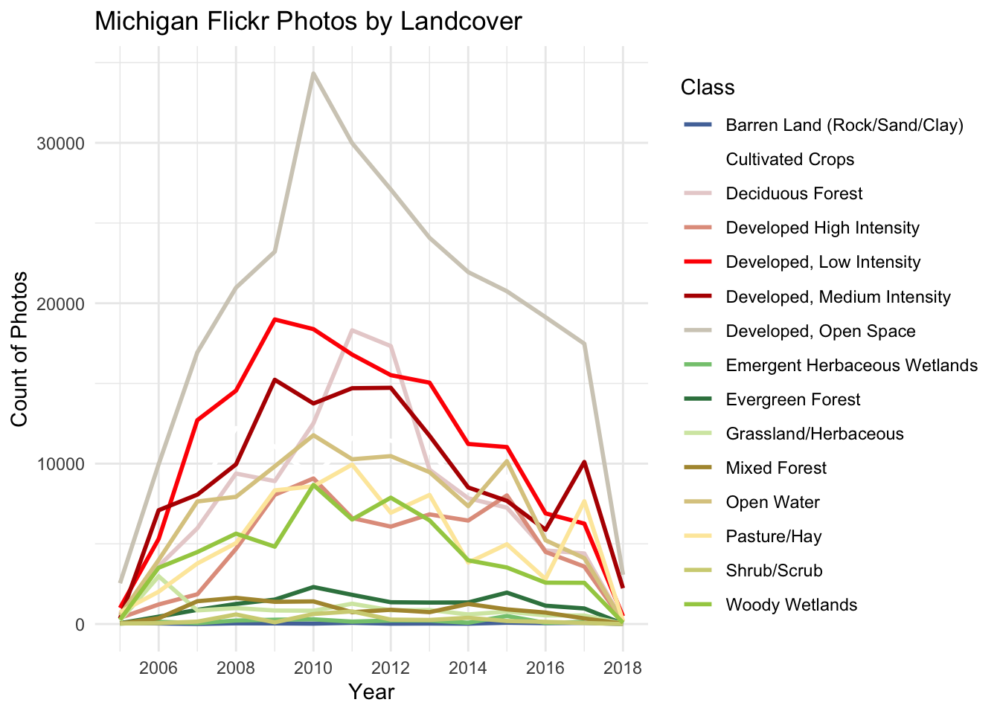
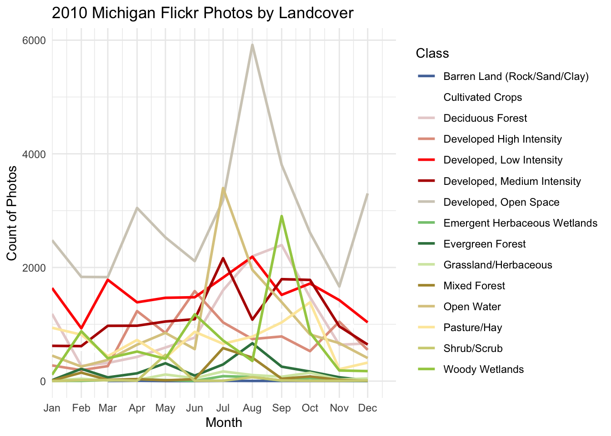
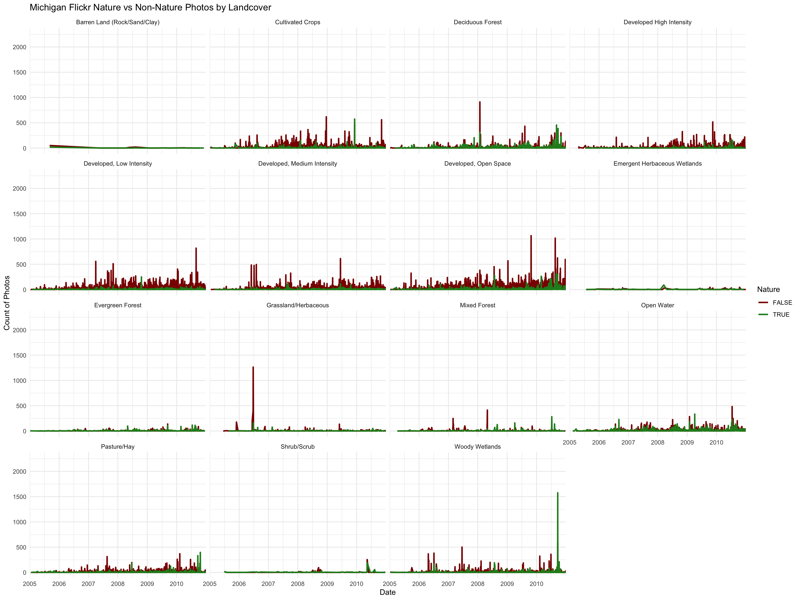
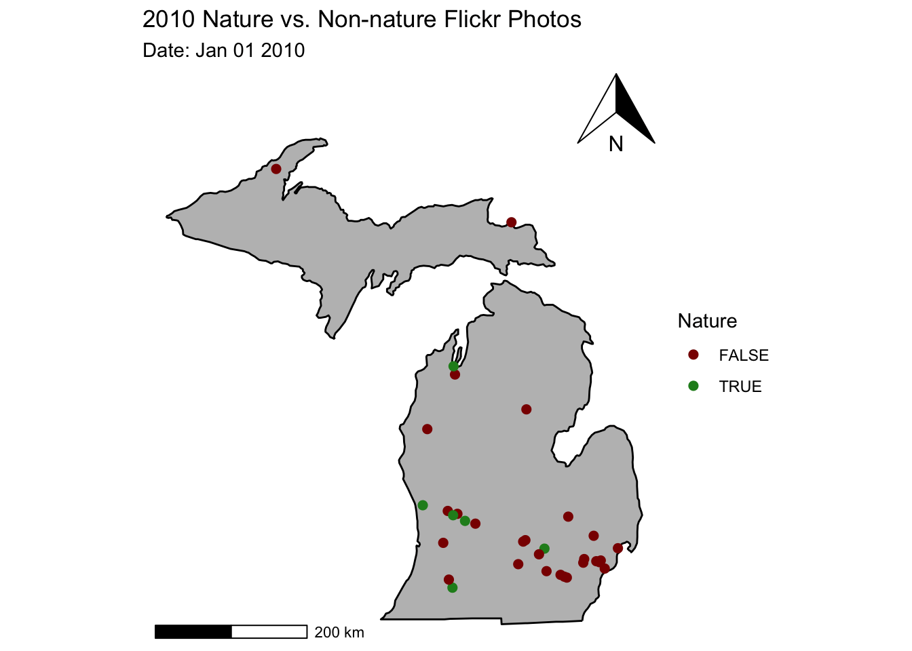

library(readr)
library(ggplot2)
library(ggthemes)
library(gganimate)
library(foreign)
library(dplyr)
library(rnaturalearth)
library(rnaturalearthdata)
library(gifski)
library(lubridate)
library(tidyverse)
library(wesanderson)
library(FedData)
library(ggspatial)MichFlickr <- read.csv("MichiganFlickr.csv")
selected_cols <- nlcd_colors()[, c("ID", "Class")]
landPhoto <- left_join(MichFlickr, selected_cols, by = c("Landuse" = "ID"))landPhoto <- landPhoto %>%
mutate(
# Flickr upload times are Unix seconds; assume UTC unless you know otherwise
date = as.POSIXct(dateupload, origin = "1970-01-01", tz = "UTC"),
date = as.Date(date),
year = year(date),
month = factor(month(date, label = TRUE, abbr = TRUE),
levels = month.abb, ordered = TRUE),
day = day(date),
count = 1L,
Nature = !is.na(predict_Na) & predict_Na > 0.6
) %>% na.omit()year_land <- landPhoto %>%
group_by(year, Class) %>%
summarise(total_photos=sum(count)) %>%
mutate(date = as.Date(paste(year, "01", "01", sep = "-")))## `summarise()` has grouped output by 'year'. You can override using the
## `.groups` argument.min <- as.Date("2005-1-1")
max <- NA
byyear <- ggplot(year_land, aes(x = date, y = total_photos)) +
geom_line(aes(color = Class), size = 1) +
scale_color_manual(values = nlcd_colors()$Color) +
scale_x_date(limits = c(min, max),
date_labels = "%Y",
date_breaks = "2 year") +
labs(title = "Michigan Flickr Photos by Landcover", x = "Year", y = "Count of Photos")+
theme_minimal()## Warning: Using `size` aesthetic for lines was deprecated in ggplot2 3.4.0.
## ℹ Please use `linewidth` instead.
## This warning is displayed once every 8 hours.
## Call `lifecycle::last_lifecycle_warnings()` to see where this warning was
## generated.byyear## Warning: Removed 30 rows containing missing values or values outside the scale range
## (`geom_line()`).
month_land <- landPhoto %>%
group_by(year, month, Class) %>%
summarise(total_photos=sum(count)) %>%
mutate(month_num = match(month, month.abb),
date = as.Date(paste(year, month_num, "01", sep = "-")))## `summarise()` has grouped output by 'year', 'month'. You can override using the
## `.groups` argument.min1 <- as.Date("2010-1-1")
max <- as.Date("2010-12-31")
bymonth <- ggplot(month_land, aes(x = date, y = total_photos)) +
geom_line(aes(color = Class), size = 1) +
scale_color_manual(values = nlcd_colors()$Color) +
scale_x_date(limits = c(min1, max),
expand = c(0, 0),
date_labels = "%b",
date_breaks = "1 month") +
labs(title = "2010 Michigan Flickr Photos by Landcover", x = "Month", y = "Count of Photos")+
theme_minimal()
bymonth## Warning: Removed 2126 rows containing missing values or values outside the scale range
## (`geom_line()`).
daily_nature <- landPhoto %>%
mutate(day = as.Date(date, format="%Y-%m-%d")) %>%
group_by(day, Nature, Class) %>% # group by the day column
summarise(total_photos=sum(count)) ## `summarise()` has grouped output by 'day', 'Nature'. You can override using the
## `.groups` argument.ggplot(daily_nature, aes(x = day, y = total_photos)) +
geom_line(aes(color = Nature), size = 1) +
scale_color_manual(values = c("#8B0000", "#228B22")) +
scale_x_date(limits = c(min, max),
expand = c(0, 0),
date_labels = "%Y") +
facet_wrap(~Class) +
labs(title = "Michigan Flickr Nature vs Non-Nature Photos by Landcover", x = "Date", y = "Count of Photos")+
theme_minimal()## Warning: Removed 4003 rows containing missing values or values outside the scale range
## (`geom_line()`).
I used the points of each nature and non-nature photo and put it on a map of Michigan to create animation of photos taken throughout the year of 2010.
I accounted for the user noise (same few users posting several pictures) by collapsing all of a user’s photos into one point using the mean location and assigning each user a single Nature category.
states <- map_data("state")
mich <- subset(states, region == "michigan")
mich <- states %>%
filter(region == "michigan")
mich <- ggplot(data = mich, mapping = aes(x = long, y = lat, group = group)) +
coord_sf(crs = 4326, datum = NA) +
geom_polygon(color = "black", fill = "gray") +
theme_void() +
annotation_scale(location = "bl", width_hint = 0.3) +
annotation_north_arrow(location = "tr", which_north = "true")
animateMich <- landPhoto %>%
filter(date >= as.Date('2010-01-01') & date <= as.Date('2010-12-31')) %>%
group_by(owner) %>%
summarise(
longitude = mean(longitude, na.rm = TRUE),
latitude = mean(latitude, na.rm = TRUE),
Nature = first(Nature),
date = min(date),
.groups = "drop"
)
p2 <-mich +
geom_point(data = animateMich, aes(x =longitude, y=latitude, color=Nature), inherit.aes = FALSE, size = 2) +
scale_color_manual(values = c("#8B0000", "#228B22")) +
labs(title = "2010 Nature vs. Non-nature Flickr Photos",
subtitle = 'Date: {format(frame_time, "%b %d %Y")}') +
transition_time(date)
animate(p2 + shadow_wake(0.1), fps=2)
For this analysis, my research question was how does land cover of the photos taken and being a nature picture versus a non-nature picture relate to the amount of Flickr images taken in Michigan. My hypothesis was the more greenery based land covers will have more pictures overall and they would be classified as nature images. From a temporal standpoint, I believe the photo-sharing frequency will be higher during warmer months because users are more likely to visit natural areas and engage in outdoor recreation during these periods. From a social media standpoint, I think there might be a small group of over active users creating noise by contributing large numbers of photographs from a limited set of locations.
Interestingly, more pictures were taken in developed areas of non-nature images. Thus, another important consideration is the role of accessibility in shaping spatial patterns of photo sharing. Even though natural landscapes seem to be what people would usually take pictures of, users tend to take more photographs in easily accessible developed areas such as city parks, waterfronts, and recreation hubs. This means that the spread of Flickr images may reflect patterns of human convenience rather than the content of the pictures being nature or non-nature. To understand what drives the pictures taken, it is important to look at the areas where these nature and non-nature pictures were taken so we are not assuming all nature pictures are from natural areas and all non-nature pictures are from urban areas.
Within the years of this dataset, the most pictures were taken in 2010 so I analyzed all the months more specifically from this year. By land cover, it is clear the most pictures taken were non-nature but interestingly the most non-nature photographs were taken in mixed and evergreen forests. To understand if the same users taking pictures in these areas is skewing the data, I visualized where nature and non nature pictures were taken in Michigan by only creating one point per user and per land cover type. From this last animation, we can tell over 2010 there are more nature pictures taken in the summer months and non-nature pictures in the lower part of Michigan overall.
I would argue non-nature pictures were more abundantly taken not only because the same users took several pictures there, but it was the most accessible and easy for most people to take pictures. This is why the non-nature pictures are more abundant even in land covers that are traditionally natural such as mixed or evergreen forests. The map of Michigan is good visual to understand this distribution of pictures taken without the high-user bias. While more non-nature pictures are taken overall, it seems this is due to higher activity in urban cities like Ann Arbor and less representation from areas higher up the peninsula. From this animation, we can also see the higher representation of pi